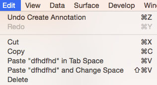

Edit Menu
Items on the Edit Menu and their text will vary depending upon
the state of wb_view such as when an annotation is selected in
Annotations Mode.
- Undo (text may vary) Undo
a previous operation.
- Redo (text may vary) Redo
an operation that was undone.
- Cut Remove and place the selected item onto the
clipboard.
- Copy Place a copy of the selected item onto the
clipboard.
- Paste (text may vary) Paste
the item from the clipboard at the mouse cursor location.
- Paste
Special (text may vary) A special mode to paste the
item from the clipboard at the mouse cursor location.
- Delete Delete the
selected item
- Select
All Used to select
all time, typically used for Annotations
- Start Dictation
Added by operating system on MacOS; serves no function in
wb_view
- Emoji &
Symbols Added by operating system on MacOS; serves
no function in wb_view
